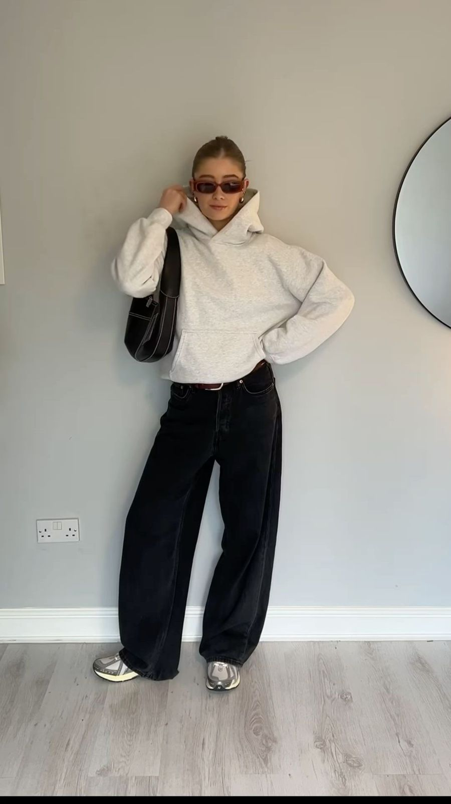
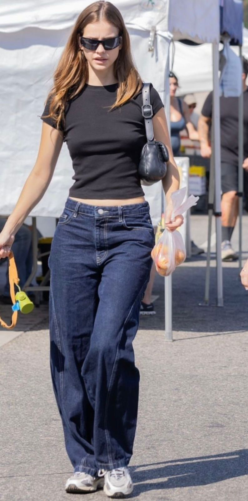

CASUAL
El estilo casual combina comodidad, simplicidad y moda para el día a día.
¿Qué usar para este estilo?
- Jeans y camisetas básicas
- Tenis blancos
- Chaquetas denim
- Sudaderas cómodas
- Colores neutros
Outfit Inspo


